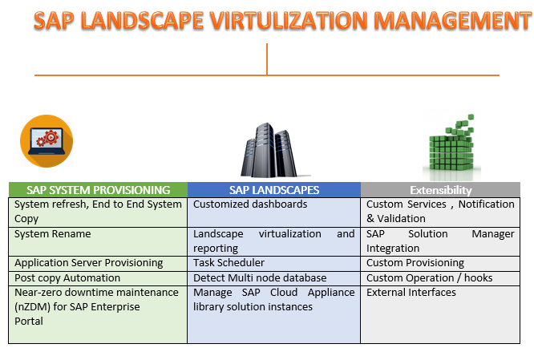
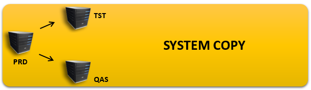
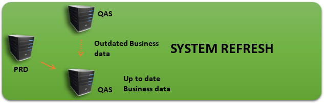
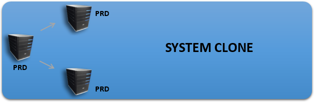
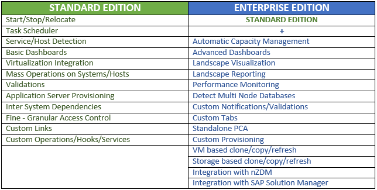

SAP LVM
SAP NW Landscape Virtualization Management provides SAP customers with classic on-premise installations take their first steps into the cloud and it makes lives a lot easier for SAP Basis admins
SAP NW Landscape Virtualization Management focuses on SAP Basis administrators and IT professionals who are responsible for configuring the SAP environment and acts as a central repository for the entire SAP landscape, binding the gap between infrastructure management and SAP application management and automates many routine administration tasks, including system copy, system refresh, and system cloning. Which is a hectic manual work, especially post-processing. Automating such routine tasks can significantly reduce operational costs
To boost business agility and control cost, many SAP consumers switch on to cloud computing and virtualization. When this happens, they tend to invest their business in a hybrid approach that provides them to provision software in on-demand infrastructures that are hosted on-premise. This on-demand/on-premise hybrid approach is known as "cloud enabling."
Customers spend a lot of time, and wading through 100-page manuals, to create system copies, We see customers who used to spend up to ten days going through a long process chain to perform such a system copy. With SAP LVM the waiting times are cut down to couple of hours.
SAP NW Landscape Virtualization Management visualizes the SAP landscape and it helps in generating reports for individual systems and for each landscape within any landscape that provides customers compare infrastructure data. It takes the live information from the host and puts it in a graphical view so the Basis admins can actually see what they have.
Cut Cost and improve agility by Automating Common System Administration Tasks
By streamlining and automating critical business processes, SAP Landscape Virtualization Management software provides Information Technology professionals to focus on controlling IT costs, act to to new initiatives and differentiate the business.
- Manage your SAP landscape in physical and virtualized environments
- Central management point for your SAP landscape, start/stop, and mass operations
- Automate standard, day-to-day administrative and lifecycle management tasks
- Save time, effort, and money by automating copy, clone and refresh
Single Console to manage SAP Software and infrastructure
SAP LVM gives control and visibility over SAP and non-SAP which runs in physical and virtual infrastructures. By automating and simplifying common administration work, it also helps in reducing the time, cost and effort.
SAP LVM Landscape Virtualization Management supports the SAP Solution Manager Application management by using insight into applications as well as the infrastructure running in them.
Copy, refresh and clone more easily
SAP LVM provides the effort and required time to copy, refresh and clone systems by automated workflows.
Copy
Existing application is copied in order to create a new system. It also provides post activityi tasks for SAP Business Suite applications such asSAP Customer Relationship Management & SAP Supply Chain Management and SAP ERP applications. The software provides a cloned system with change in SID and name as a new system to the customers
Data can be refreshed in a non-production system by copying over the production system. SAP NW Landscape Virtualization Management shifts all the critical information about the target system such as the user information, system ID and name and connections before a system copy operation is performed. The exported configuration data is restored after the copy is done, and the target system is back to the configuration it had to start of the restart process just with updated data.
Clone
An exact image of a source is made with same as that of a virtual machine and storage clone of the SAP ERP application. Retaining the SID and name, providing customers with theoretical test and business production system without closing.
Automate administrative tasks
SAP NW Landscape Virtualization Management gives you a framework for automating the tasks required to monitor and manage SAP applications and their supporting infrastructure. For example, using automatic capacity management, you can specify service-level agreements (SLAs) based on application response times; the software will automatically add or remove application servers from systems as needed to help ensure you meet SLAs. With two modes of operation (automatic or approval-based), you have full control over how and when you respond to fluctuating system capacity demands. Automation reduces the human error, lowers infrastructure costs and speeds response times. This also adds up a task planner for scheduling related to management and operation of SAP software systems. For example, Customers can schedule a system shutdown to occur at night without the need for human oversight.
Centrally view and monitor applications and infrastructure
To address these issues, SAP NW Landscape Virtualization Management delivers monitoring tools, centralized visualization, dashboards and reporting. Application and Infrastructure data is collected in real time and then analyzed and published to minimize business impact. Steps are to be taken to increase business agility and control IT cost like freeing up staff and to focus on strategic work not in manual, error-prone tasks.
Many customers find that their IT department is been utilized by lot of tools to monitor applications, IT infrastructure and third-party applications and this limit and fragment visibility into server performance and Application.
SAP LVM license has two editions, one is Standard and other ins Enterprise Editions.
Business Benefits:
Sustainable IT (reduced energy consumption and minimized e-waste) through Optimized use of computing resources
Reduced cost, effort and time to operate and operate your SAP systems through automation of time consuming basis administration tasks
Increased operational agility is done by quick response to workload fluctuations and acceleration of application lifecycle management operations
Greater operational continuity is by visibility, control and centralized management of customer's entire SAP landscape using a single console
Summary
Companies usually waste lot of their resource in effort and time configuring, deploying, monitoring, managing and deploying SAP landscapes and software systems. Using SAP Net Weaver Landscape Virtualization Management software, customers can gain full visibility and automate repetitive tasks with control over SAP and non-SAP physical and virtual infrastructures and their software systems. Customers can make their system landscape ready for the cloud, as well as agility and boost their efficiency in lower operating costs.